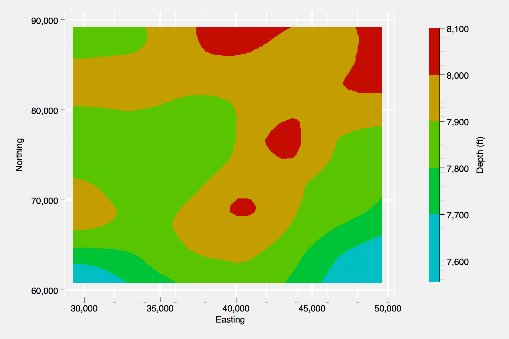

Significant bug fixed prior to V 1.0.0 Release
In the most recent push to the repository I was finally able to fix an issue that had gone unresolved for quite some time. Although contour plots may not be used with much regularity, users of brewscheme may have noticed that contour plots created with schemes generated using brewscheme returned blank plot regions (e.g., everything but the data would be displayed). With the most recent patch, this functionality has been corrected. Additionally, the handling of the palettes passed to the constart() and conend() options has been improved. Previously, the program would select the first two values from the version of the palette containing the maximum number of colors (e.g., it would select the first two values from the palette of ggplot2 that contained 24 values). Because Stata uses a color interpolator for the values of the contourplots, this could lead to cases where the starting and ending colors were too proximal in the color space to be easily perceived (e.g., trying to differentiate between slightly different shades of blue). Now, brewscheme uses the opposite behavior (e.g., selects the version of the palette with the fewest number of colors) as a way to potentially safe guard against this proximity issue. The example below shows the new functionality using a theme created to emulate the aesthetics of the ggplot2 package in R.
Example 1. Contour plot example with brewscheme.
// Change the end of line delimiter
#d ;
// Generate the theme file used to simulate ggplot2 aesthetics
brewtheme ggtheme, numticks("major 5" "horizontal_major 5" "vertical_major 5"
"horizontal_minor 10" "vertical_minor 10") color("plotregion gs15"
"matrix_plotregion gs15" "background gs15" "textbox gs15" "legend gs15"
"box gs15" "mat_label_box gs15" "text_option_fill gs15" "clegend gs15"
"histback gs15" "pboxlabelfill gs15" "plabelfill gs15" "pmarkbkfill gs15"
"pmarkback gs15") linew("major_grid medthick" "minor_grid thin" "legend medium"
"clegend medium") clockdir("legend_position 3") yesno("draw_major_grid yes"
"draw_minor_grid yes" "legend_force_draw yes" "legend_force_nodraw no"
"draw_minor_vgrid yes" "draw_minor_hgrid yes" "extend_grid_low yes"
"extend_grid_high yes" "extend_axes_low no" "extend_axes_high no")
gridsty("minor minor") axissty("horizontal_default horizontal_withgrid"
"vertical_default vertical_withgrid") linepattern("major_grid solid"
"minor_grid solid") linesty("major_grid major_grid" "minor_grid minor_grid")
ticksty("minor minor_notick" "minor_notick minor_notick")
ticksetsty("minor_vert_default minor_vert_wgridnolab") gsize("minortick_label minuscule"
"minortick tiny") numsty("legend_cols 1" "legend_rows 0" "zyx2rows 0" "zyx2cols 1")
verticaltext("legend top");
// Change end of line delimiter back to carriage return
#d cr
// Now five colors from same palette using the ggplot2 inspired theme
brewscheme, scheme(ggplot2ex1) allsty(ggplot2) allc(3) ///
themef(ggtheme)
// Load example data
sysuse sandstone.dta, clear
// Create contour plot with brewscheme generated scheme file
tw contour depth northing easting, scheme(ggplot2ex1)
